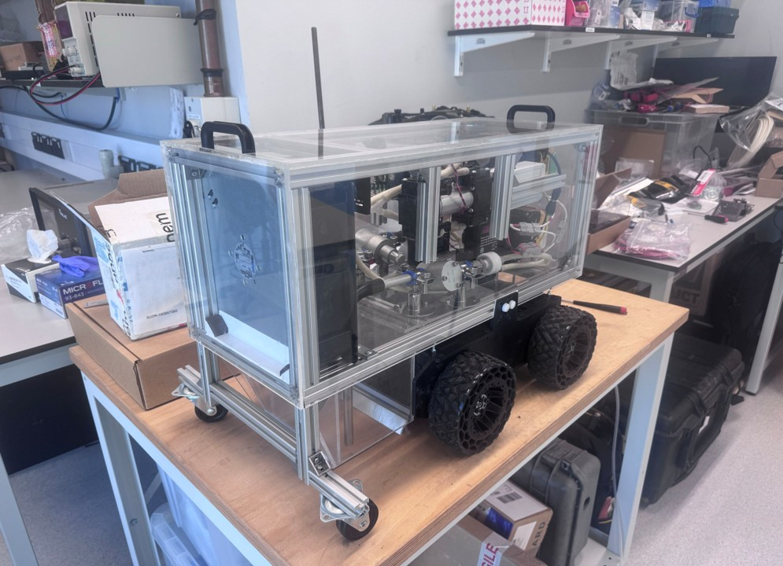
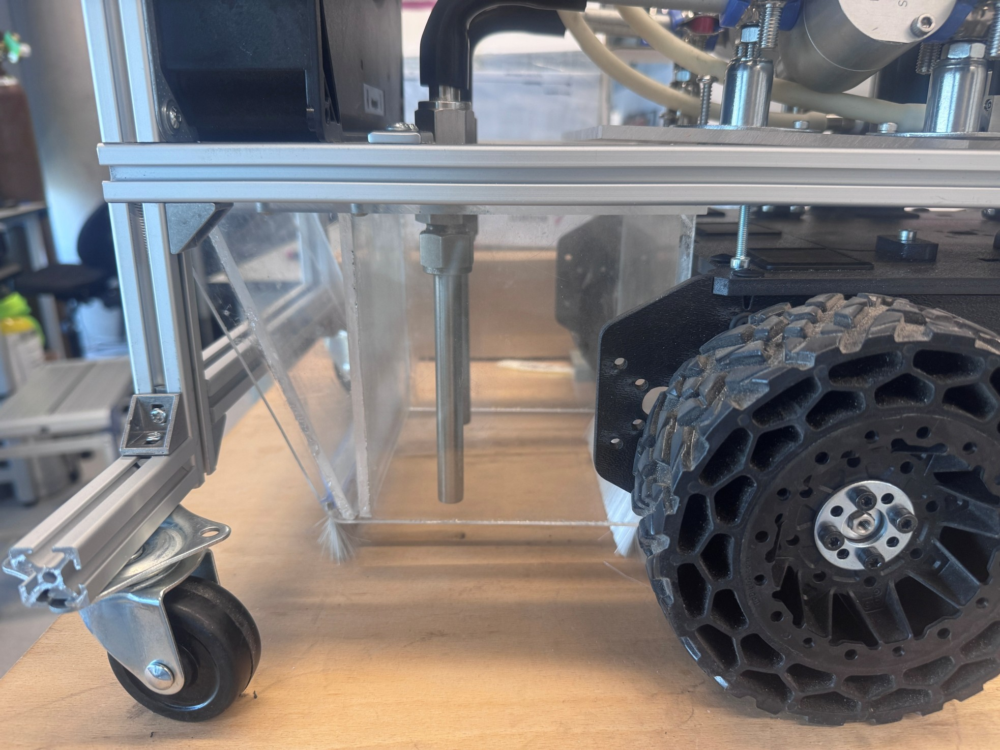
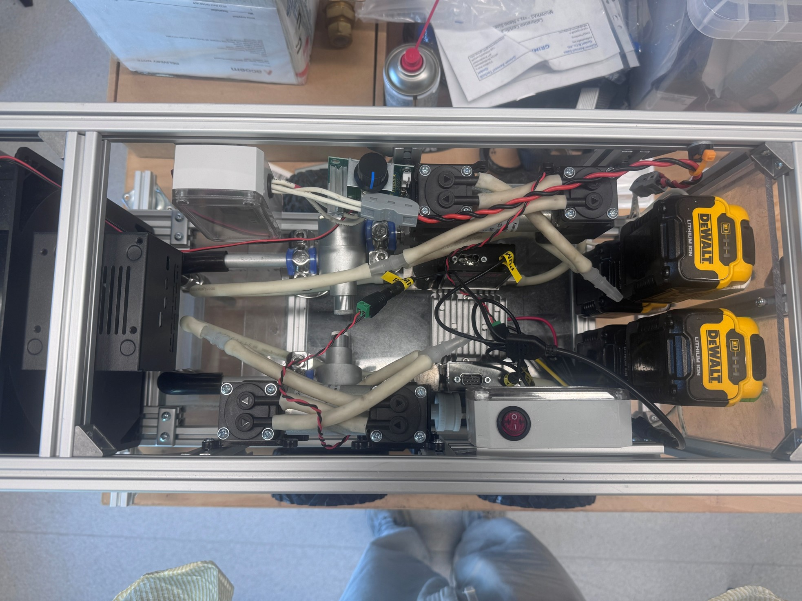
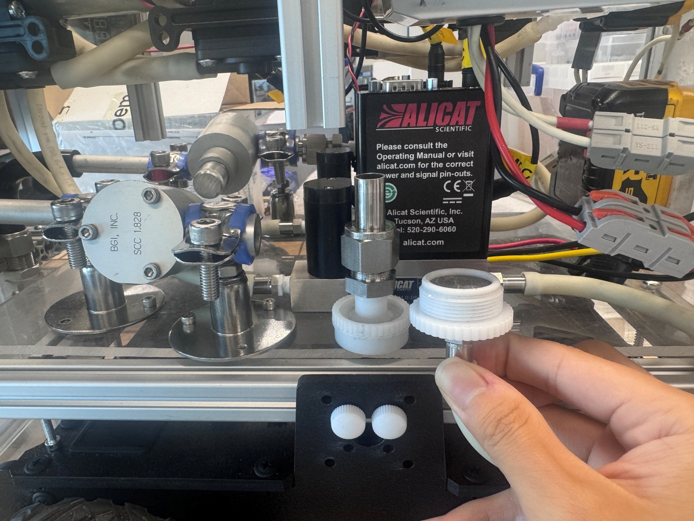

May – Aug 2026 · Imperial College London · Hardware Integration & Robotics
ERG Surface Sampling ROVER
Remote Operated Vacuum for Environmental Research (ROVER): an independent, compact mobile platform designed to collect non-exhaust particulate emissions and road surface telemetry over wide sampling areas.

Key Specifications
| Airflow | Centrifugal resuspension fan + 2× gas diaphragm pumps regulated using mass flow controllers at 5L/min |
|---|---|
| Filtration & Collection | 2× PM2.5 cyclone separators onto PTFE TE37 1 µm (25 mm) filters |
| Particulate Sensor | AlphaSense OPC-N3 supported by Raspberry Pi |
| Vision & Telemetry | GoPro HERO7 Silver (road surface imaging, GPS & velocity) |
| Drivetrain & Power | 4 all-terrain drive wheels + 2 castor wheels; 18V DeWalt battery |
Design Significance
As more regulations on exhaust emissions come into effect, non-exhaust emissions (brake, tire, and road wear particles) make up a growing share of urban particulate matter. Sampling methods include temporal sampling using stationary observatories near traffic-heavy intersections, or spatial sampling across road surfaces. The latter traditionally requires bulky and power-intense setups or full-sized test vehicles. The Environmental Research Group needed a compact, remote-operated rover capable of repeatable mobile resuspension and filter collection.
Major Design Considerations
- Dynamic Clearance: Configurable front castor wheel height allows for the sampling box to remain as close to the ground as possible to maximize sampling efficiency, while maintaining adaptability to field conditions such as debris on road surfaces by lowering the wheels and thus increasing clearance.
- Design for Servicability: Frequently interacted components are easy to access, such as the fan & pump batteries, the sample holders. and the height adjustment of the castor wheels.
- Dual-Channel Aerosol Sampling: Two identical and independent gas diaphragm pump lines fitted with PM2.5 cyclone separators and 25 mm PTFE TE37 membrane filters allows for collection of two functionally identical samples for lab analysis. This enables some more destructive analysis methods, such as elemental composition analysis using an XACT XRF monitor.
- Telemetry & Sensing Suite: High time-resolution optical particle concentration logging (AlphaSense OPC-N3 via Raspberry Pi) with downward/forward road surface video imaging, GPS coordinates, and velocity telemetry from an onboard GoPro HERO7 Silver.
Operating Manual & Data Sheet
In addition to executing initial field trial runs and filter weighing in Imperial College London's calibrated weigh room, I created a detailed operating manual for the rover. You can view or download it below:
📄 View ERG Surface Sampling ROVER Manual (PDF)
ROVER in the Field
Watch footage of the ROVER deployed in testing, demonstrating mobile dust resuspension:


